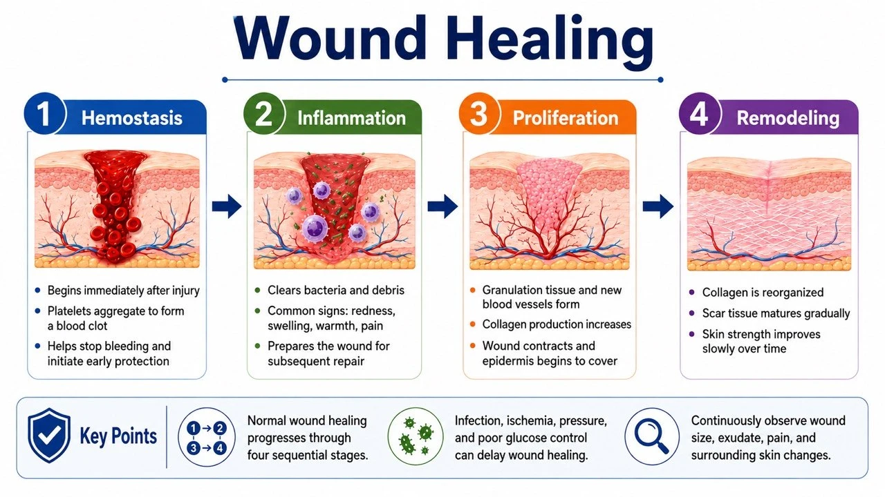

How Do Wounds Heal? (For Patients & Caregivers)
1. The four stages of wound healing
Your body starts repair work the moment you are injured. These stages do not happen one per day in a neat order — they overlap and run at the same time. That is why a wound can look almost unchanged on the outside while, underneath, your body is still clearing damaged tissue, building new blood vessels, and making new skin.

| Stage | Roughly when | What you might see |
|---|---|---|
| 1. Stopping the bleeding | Starts right after the injury | Blood clots and forms a clot or scab that helps stop the bleeding |
| 2. Cleanup and inflammation | The first few days | A little redness, swelling, warmth, and pain can be normal — immune cells are clearing out germs and damaged tissue |
| 3. Growing new tissue | Days to weeks | Red or pink bumpy new tissue fills in, new skin grows from the edges toward the middle, and the wound slowly shrinks |
| 4. Scar maturing | Weeks to months or longer | The scar slowly fades and softens from red and firm, but it usually never becomes quite as strong as the original skin |
2. Which changes can be normal?
When a wound is new, a small amount of redness, swelling, pain, or clear fluid does not always mean infection. What matters most is the direction of change. Normal healing usually gets a little better each day. If the redness spreads, the pain gets worse, the fluid increases, or you start feeling unwell all over, the wound needs to be checked again.
- Brief mild redness, swelling, warmth, and pain right after the injury that then eases day by day
- A small amount of clear, pale yellow, or slightly blood-tinged fluid that gradually decreases
- Moist, red or pink new tissue appearing in the wound bed
- New skin slowly growing from the edges toward the middle
- A new scar that starts out redder, firmer, or a bit itchy, then slowly fades
3. What can slow a wound down?
Healing needs enough blood flow, oxygen, and nutrition — and freedom from constant rubbing or pressure. Diabetes, blood vessel disease, kidney disease, smoking, and infection can all slow repair. If you only treat the surface of the wound without fixing these causes, the wound tends to come back or refuse to heal.
| Factor | Common examples | What you can do |
|---|---|---|
| Poor blood flow | Cold, pale, or purplish feet; pain when walking or even at rest | Do not cut off black scabs yourself; get the blood vessels and the wound checked promptly |
| Infection | Spreading redness, swelling, warmth, and pain; pus; a bad smell; fever | Seek medical care promptly — changing dressings cannot replace treatment for the infection |
| Constant pressure or rubbing | Long hours sitting or lying down, tight shoes, repeated pressure while walking | Follow instructions to turn, take pressure off the area, and use proper shoes or supports |
| Diabetes and chronic illness | High blood sugar, kidney disease, weakened immunity | Take medicines regularly and keep appointments; any new foot wound should be checked early |
| Poor nutrition | Eating little, losing weight, not enough protein | Get enough calories, protein, and fluids; high-risk people should have a nutrition assessment |
| Smoking | Nicotine narrows blood vessels and lowers oxygen in the tissue | Quitting smoking helps wounds heal |
4. Home care basics that help wounds heal
The goal of home care is to keep the wound clean, protected, and just moist enough. More dressing changes are not automatically better — adjust based on how much fluid there is, the state of the dressing, and your care team's instructions. Over-washing, repeatedly ripping off stuck gauze, or using harsh antiseptic liquids can all damage the delicate new tissue.
- Clean the wound and change dressings as instructed, and wash your hands before touching the wound
- Keep it slightly moist but do not soak it in water; change the dressing when it is soaked through, leaking, falling off, or dirty (How to do wet gauze dressing changes)
- Do not put alcohol, hydrogen peroxide, herbs, powders, or home remedies into the wound
- Do not cut off black scabs or dead tissue yourself, and do not stuff gauze into a wound whose bottom you cannot see
- Diabetic foot wounds need pressure taken off; pressure injuries need regular turning; for vein-related leg wounds, blood flow must be checked before any compression
- Eat enough protein and calories, drink enough fluids, control your blood sugar, and avoid smoking
- Keep your follow-up appointments — do not assume the deep part has healed just because the surface has scabbed over
5. How to check the wound every day
Try to look at the wound at about the same time each day, and compare the trend — not just one single day. If you take photos, use the same distance, angle, and lighting, and place a ruler nearby without touching the wound. Photos are only for tracking; they cannot replace a professional exam of depth, blood flow, and infection.
| What to check | What to note down |
|---|---|
| Size and depth | Is it getting bigger or deeper, or forming new holes or tunnels under the skin? |
| Color and tissue | Is there a change in the red/pink new tissue, yellow-white dead tissue, or black tissue? |
| Fluid (drainage) | Has the amount, color, thickness, or smell increased or changed? |
| Surrounding skin | Is it red, swollen, soggy-white, broken, rashy, or warm? |
| Pain and how you feel overall | Is the pain increasing? Any fever, chills, or unusual tiredness or confusion? |
| Photos | Take them at the same distance, angle, and lighting, and note the date; do not include names or ID information in the photo |
6. When should you seek medical care quickly?
Some wounds look small on the outside but injure deeper tissue, or get worse fast because of poor blood flow. If there is bleeding that will not stop, an infection spreading quickly, skin turning black, a cold limb, or you feel unwell all over, do not wait for the next routine dressing change — contact your care team or go to the emergency department right away.
- Bleeding that will not stop, or bright red blood spurting out
- Redness, swelling, warmth, and pain getting worse fast, with lots of pus or a foul smell
- Fever, chills, confusion, rapid breathing, or feeling very unwell all over
- The wound quickly turning black, getting deeper, or spreading, or new blisters or a crackling feel under the skin
- A foot that is cold, pale, or purplish, with a sudden increase in pain
- Bone, tendon, or deep tissue visible, or an object stuck inside the wound
- A wound that suddenly splits open — especially a surgical wound that deepens or has tissue bulging out
- Any new foot wound in someone with diabetes, on dialysis, with weakened immunity, or with poor circulation
7. Scar care
Scars usually take months to mature. Early on it is common for a scar to be redder, feel firm, or itch now and then. Scar treatment should start only after the wound has fully closed. If the skin is still broken, weeping, or infected, treat the wound first — otherwise products may irritate it or seal germs into an area that has not healed.
- Do not use scar products on your own before the wound has fully closed
- Once fully closed, you can use silicone gel or sheets, gentle massage, or pressure therapy as advised by your care team
- Avoid sun exposure — cover the scar with clothing; when sunscreen is appropriate, choose one on professional advice
- If a scar keeps thickening, grows beyond the original wound, is very itchy or painful, or limits movement, see a plastic surgeon or dermatologist
8. The one-line summary
Smaller, shallower, less fluid, less pain, more new skin = the right direction
Normal healing usually means pain, redness, swelling, and fluid slowly decreasing while new skin slowly increases. If the wound is not improving — or is getting bigger and deeper, or shows signs of infection, poor blood flow, or whole-body illness — go back for reassessment. If things are going the wrong way, or there is no reasonable progress after a few weeks, it does not mean the caregiver did something wrong — it means the cause and the treatment plan need another look.
📋 What to tell your care team at the follow-up visit
- How long the wound has been there, what caused it, and how it was treated before
- How the pain, fluid, smell, and size have changed
- Whether there has been fever, chills, higher blood sugar, or trouble moving around
- How the dressing is changed each day, and how quickly it gets soaked or dries out
- Bring wound photos taken at a fixed angle and distance to help compare
Last updated: 2026-08-29